La Exiliada
Toplane · Luchadora · Noxus · nunca ha tenido rework
Norteamérica · nivel de invocador 1 740 · 91% toplane · 86% luchador
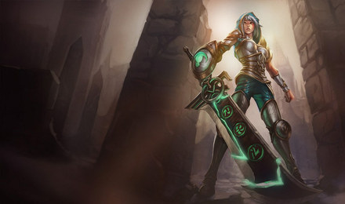
Redimida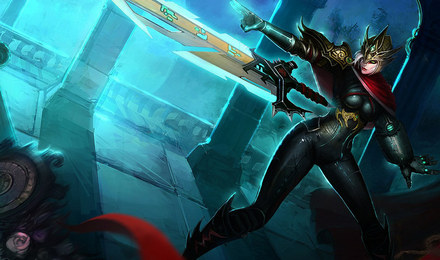
Élite Carmesí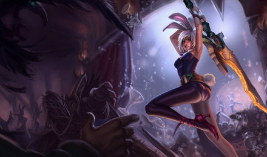
Conejita Guerrera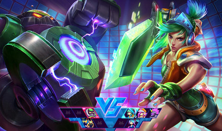
de Arcadia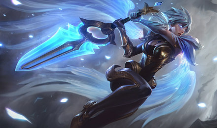
Portadora del Amanecer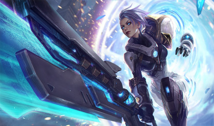
Pulso de Fuego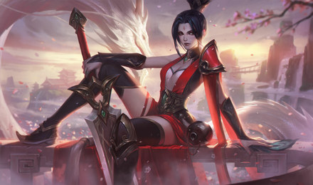
Espada Valiente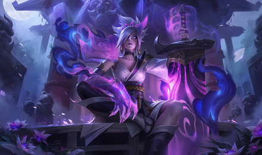
Flor Espiritual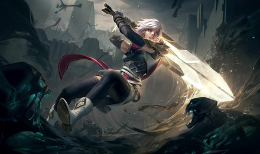
Centinela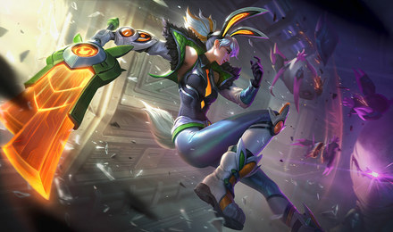
Conejita Suprema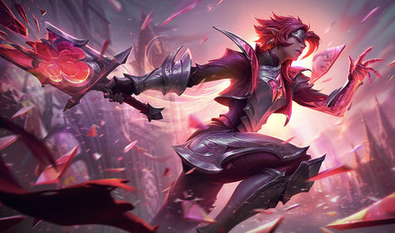
Pacto Quebrantado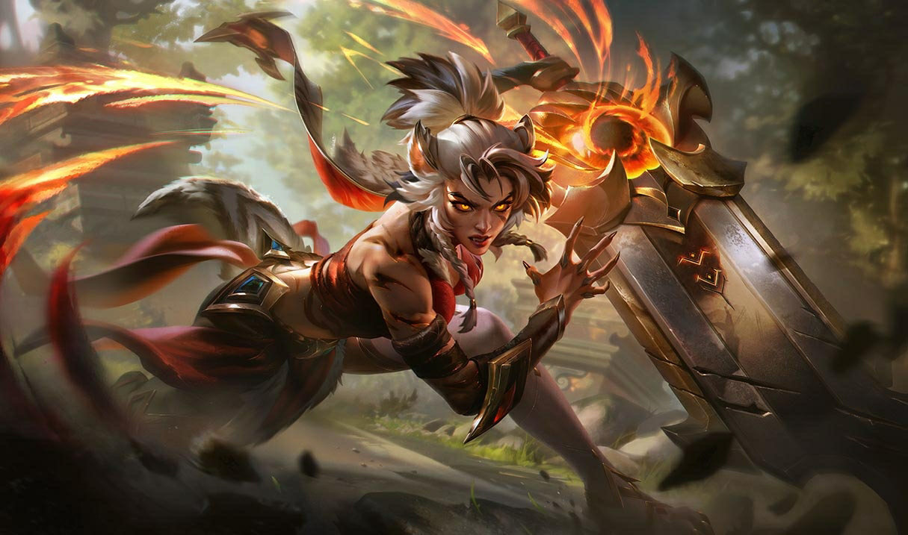
Emboscada Primigenia